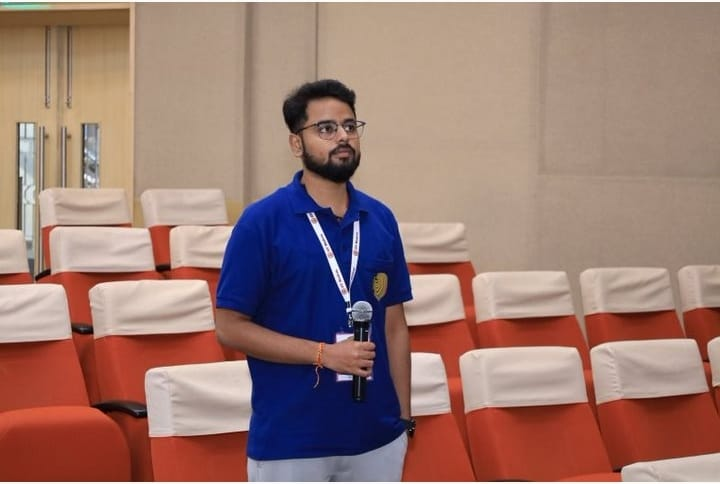
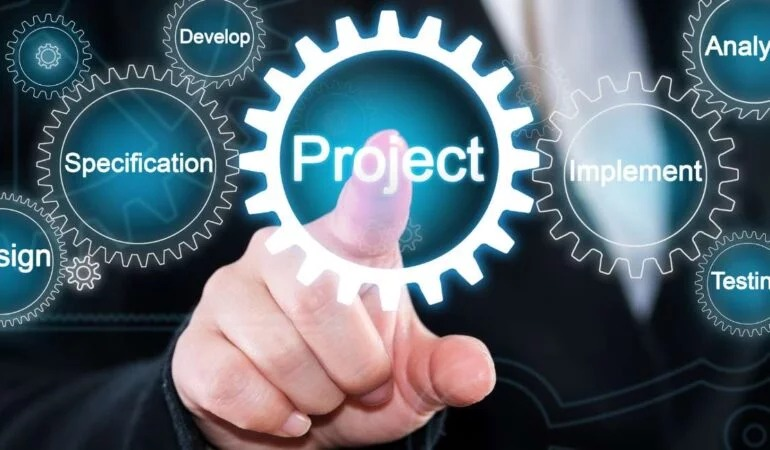

Intro

I’m Neel Mani Ratna, a Master’s student of IIT Madras graduating in 2025, passionate about AI and it's applications. My expertise lies in machine learning, deep learning, Large Language Model, and AI-powered chatbot development, with a strong focus on neural network design and training & finetuning of LLM models.
Experience
-
Tata Steel- Research Intern
Developed and validated a deep learning neural network model using FEM data to predict sheet metal stresses, strains, and
deformations with high accuracy, utilizing TensorFlow and supervised learning techniques to enhance computational efficiency.
Optimized multi-pass sheet rolling operations through AI-driven predictive analytics, reducing roller stands from 8 to 6 passes,
saving $50,000 annually, and improving process efficiency.
Applied Python, TensorFlow, GPT-based LLMs for data-driven insights, and model-based development (MBD) methodologies with
CAD/CAE tools like ABAQUS to design, simulate, and enhance production control systems for scalable industrial applications
-
Thinkers Media
Working as a freelancer on the project of AI powered Chatbot using LLM
Utilizing pre-trained GPT models (e.g., GPT-3/GPT-4), fine-tuning them on domain-specific datasets to enhance contextual understanding and optimize conversational AI capabilities.
Integrate API endpoints to facilitate interaction between the chatbot and the language model for real-time response generation and collaborated with cross-functional teams to optimizing chatbot features.
Deploying and monitoring the AI chatbot using LangSmith and LangGraph, enabling scalable, observable, and structured conversational workflows without requiring traditional front-end development
-
Certified project from Pwc Switzerland
Predictive and Statistical Modeling
Evaluated a retail banking phone marketing algorithm by predicting term deposit subscription using a dataset of 41,000 clients,
employing Ensemble methods (e.g., XGBoost) and cross-validation for robust model selection and performance evaluation.
Analyzed various classification models, achieving a peak accuracy of 89.45% with XGBoost.
Implemented feature selection techniques and dimensionality reduction using techniques like PCA and autoencoders, reducing
features from 20 to 10 with minimal loss in model accuracy (89.24%), resulting in a 28% reduction in computational cost
Projects

-
Market Basket Analysis for Customer Behavior Insights
Scraped and aggregated Smartprix mobile phone data from its websites using Python (BeautifulSoup, Selenium) to create a robust
dataset for analysis of customer purchasing behavior.
Conducted exploratory data analysis (EDA) and built interactive dashboards in Power BI to visualize product associations, uncover
trends, and support targeted marketing strategies, leading to a 10% sales increase
Automated data cleaning and preprocessing workflows, reducing manual effort by 30% and ensuring scalability for analyzing large
datasets
-
Machine Learning Project on Real Estate Data
Scraped and gathered 25,000 real estate data from 99acres.com, followed by data cleaning, feature engineering, and EDA.
Applied outlier detection, removal, and missing value imputation, boosting dataset quality, and improving model performance by 14.87%.
Engineered a machine learning model for price prediction with a 93.2% accuracy rate, integrated with a recommender system
with increased user engagement.
-
Deep Learning for Early-Stage Cancer Detection in Medical Imaging
Fine-tuned a pre-trained deep learning model (ResNet-50) on a medical image dataset (e.g., mammograms, CT scans) for early-stage
cancer detection.
Implemented transfer learning with a learning rate of 0.001 and utilized data augmentation techniques (e.g., rotation, flipping,
brightness adjustment) to enhance model robustness, improving generalization by 18% on a dataset of 8,000 images.
Optimized model performance through hyperparameter tuning (e.g., batch size of 32, Adam optimizer), achieving an AUC of 0.97 and
an F1-score of 0.93, ensuring high sensitivity and specificity for early cancer detection
-
Performance Evaluation of Large Language Models vs NLP Techniques for Sentiment Analysis
Conducted a sentiment analysis project utilizing advanced Natural Language Processing (NLP) techniques, including TF-IDF, word
embeddings, and transformers, alongside large language models (LLMs) like GPT for text classification.
Compared performance metrics such as F1-score, accuracy, and AUC-ROC, demonstrating that LLMs achieved almost 15% higher
accuracy over traditional NLP methods in handling nuanced linguistic patterns and contextual sentiment.
Leveraged Python libraries such as Hugging Face Transformers, NLTK, and Scikit-learn for data preprocessing, model training, and
evaluation, creating a robust pipeline for sentiment prediction and analysis.
-
AI Enhanced Finite Element Modeling for stress and deformation analysis in Welded Rail Joints
Utilizing Finite Element Analysis (FEA) for modeling stress and deformation in welded rail joints, employing deep learning algorithms (e.g., Convolutional Neural Networks) to predict thermal buckling and stress-induced fractures, reducing derailment risks.
Integrated neural networks into the FEA framework for dynamic optimization of rail track stability parameters, combining realtime feedback from Digital Image Correlation (DIC) with AI-powered image segmentation techniques to process and analyze strain fields in high-resolution images.
Skills
Programming Languages: Python
Tools & Libraries: NumPy, Pandas, Scikit-learn, PyTorch, SQL, Matplotlib, Langchain, LangSmith, LangGraph, Ollama Models(llama3),OpenAI model(GPT-3.5, GPT-4.0), Hugging Face, Tokenizers
Expertise: Web Scraping(Data Ingestion), Statistical Analysis, Hypothesis testing, Data preprocessing, Feature Engineering, Feature Selection, Model Training, Model Evaluation, Machine Learning, Deep Learning, Training and finetuning LLMs
Contact